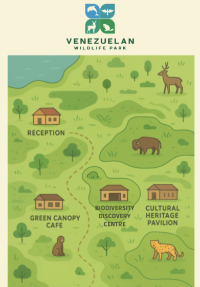

Welcome to Amuay Wildlife park
About the Park
Location
Amuay Wildlife Park lies around 350 kilometres west of Caracas, in the coastal region of Falcón State, Venezuela. The park stretches across 72 square kilometres of protected landscape, where open grasslands meet gentle hills, tropical wetlands, and forested areas. Easily accessible by road, visitors can reach the park by taking the Route 3 highway from Caracas towards Coro, then following local signs to the Amuay Reserve entrance. Public transport services and organised eco-tours also operate from nearby towns, making travel simple for visitors without private vehicles. Parking is available near the Reception and Tour Centre, where guided walks and safaris begin.
Map
Conservation Mission - Our Promise
At Amuay Wildlife Park, we believe conservation begins with connections. By visiting, you are supporting vital research, habitat restoration, and education programmes that help protect Venezuela's wild heart - today and for future generations.
Amuay Wildlife Park was established to protect Venezuela's unique biodiversity while providing an inspiring, educational experience for all who visit. The park is home to more than 1,400 bird species, 350 mammals, and hundreds of reptiles, amphibians, and native plants.
The park's mission is threefold:
1. Preservation- safeguarding fragile ecosystems and endangered species.
2. Education- raising awareness about the importance of conservation through interactive tours, workshops, and exhibits.
3. Sustainability- maintaining eco-friendly operations, from renewable energy use to strict waste management and limited vehicle access.
Vehicular traffic inside the park is restricted to official tours on designated tracks to minimise disturbance to wildlife. Rangers and biologists work daily to monitor habitats, support breeding programmes, and conduct research to promote long-term ecological balance.